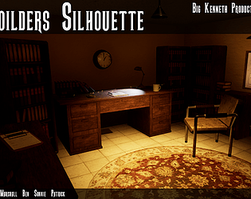

Hi, I'm Marshall. Born June 10 2004 in the north west of england, I am reletively skilled in what I do in the games industry. After studying game design at preistley college, I didn't know where to go from there, so I decided to leave the comfort of the north to learn at falmouth university, taking the Computing for Games course
I have Experiance in Unity(1 year), Unreal(3 years), C#(1 year), C++(1 year), and Unreal Blueprints(2 years). I am looking to break into the Industry at a reasonably good time, knowing how to do QA (1 year), along with some level design(2 years).
My artifact project for college, made in my second year. I had some fun with this, where I wanted to look at how you can move the player in any axis with teleporting.
(note: at the time of creating it, I didn't exactly have the best Idea on how to go about the level, so I went with something that I thought would get the most value out of the teleporting. I learnt a lot about blueprints in this time, to where I felt comfortable about doing anything in it. A Link to the git repository is found here.)
A short vertical slice of the game Big Kenneth. a phycological horror which is base on a distressed WW2 solider in a coma hospital. This is a FMP game for second year of college. (Note: this is my 2nd year FMP from college. By this point I had a fair grip on Blueprints and more version control than the rest of my peers in the team... well, in everything but branches (I learnt how to use them directly after the project.))
Diplomatic Emunity is a tower defense style game in which you are tasked by the government to protect the crops of farmers from the savage emu hoards and their generals. Can you survive the emu pest infestation? (Note: As my first Unity project, I was unsure on how to go about programming this. In addition, the entire team was made up of programmers. The team pulled through with the game and came out with this, which I am happy with. I did design and programming.)
Blight is a stealth Puzzle game, in which you are tasked with escaping your town in the midst of a plague. With the guards butchering the unclean and the clean, your task is made harder. With your known family either dead and/or missing, it is up to you to get out of there, alive and safe, in which you aren't alone. A Rat with some human sentience, is there to help his sister escape.